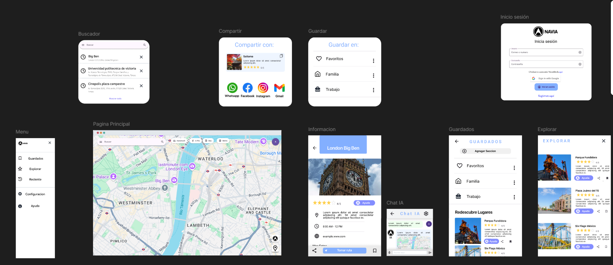
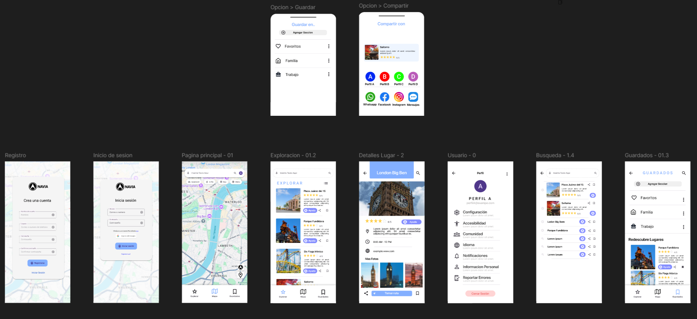
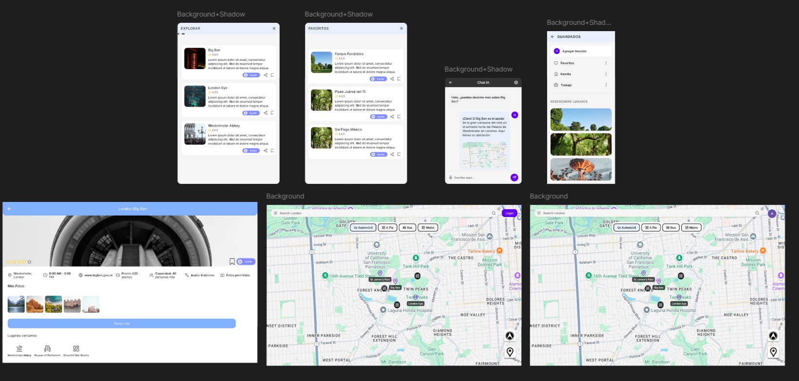

Jared de Jesús Olazarán López
Diseñador UX especializado en soluciones innovadoras que simplifican experiencias complejas. Apasionado por integrar inteligencia artificial en productos digitales para crear interacciones más naturales e intuitivas.
Imagen principal del proyecto
Sistema inteligente que comprende objetivos reales del usuario y genera rutas optimizadas considerando preferencias, presupuesto, horarios y contexto personal.
Objetivo del producto
Problema: Los usuarios enfrentan sobrecarga cognitiva al planear salidas con múltiples destinos.
Solución: Un GPS conversacional que entiende objetivos complejos y genera planes optimizados con recomendaciones contextualizadas.
Investigación
- 87% abandona búsquedas por demasiadas opciones
- 73% prefiere recomendaciones explicadas
- 91% valora integración de múltiples servicios
Mockup principal
Resultados
Aquí irá un gráfico de resultados
Tiempo de planificación ↓35%
Satisfacción percibida ↑22%
Desvíos no planificados ↓18%